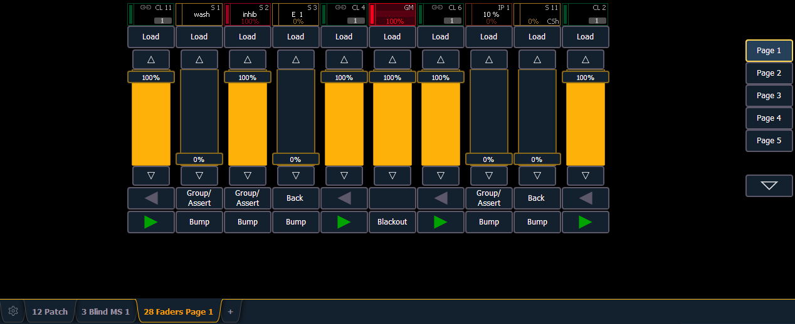
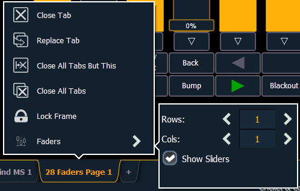

A virtual fader module can be opened from the home screen by selecting the Faders button or by pressing [Tab] [2][8].

The virtual fader module has a configuration menu, which is accessed by first selecting the module tab and then double clicking on the tab to open the menu. With the virtual fader module selected, you can also select the gear icon, which is located by the tabs, to open the configuration menu.

The following options are available in this configuration menu:
For information about configuring your faders, see Fader Configuration